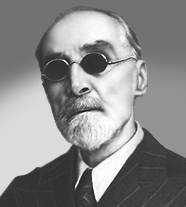

Նիկողայոս Տիգրանյան
(1857-1951)
 Նիկողայոս Թադևոսի Տիգրանյանը երկար, բեղմնավոր կյանք ապրեց: Նա ծնվել է 1857 թվականի» օգոսաոսի 19-ին Ալեքսանդրապոլում (այժմ՝ Գյումրի), կիրթ, արվեստասեր ընտանիքում: Մանուկ հասակից առնչվել է քաղաքի երաժշտական կենցաղի բազմազան դրսևորումներին. այստեղ հնչում էին գեղջկական երգն ու պարը, աշուղների ու սազանդարների երգն ու նվագը, հաճախ այգում լսվում էին եվրոպական ռոաական հանրամատչելի ստեղծագործություններ՝ զինվորական փողային նվագախմբերի կատարմամբ: Ինը տարեկան հասակում ծաղկախտի հետևանքով նա ընդմիշտ զրկվեց տեսողությունից: 1871 թվին Օրան տեղավորում են Վիեննայի կույրերի ինստիտուտում, ուր և ստանում է ընդհանուր և երաժշտական կրթություն՝ Վիեննայի կոնսերվատորիայի դաշնամուրի դասարանի պրոֆեսոր Շենների մոտ: Ինստիտուտն ավարտելուց հետո Տիգրանյանը լեզուների և երաժշտության գծով ևս երեք տարի կատարելագործվում է Վիեննայում և 1880 թ. վերադառնալով հայրենիք, ծավալում է բազմակողմանի գործունեություն:
Տիգրանյանը գրի առավ և դաշնամուրի համար մշակեց տարածված պարեղանակներ ու երգեր, որոնք լույս տեսան «Անդրկովկասյան ժողովրդական երգեր և պարեր» խորագրով ժողովածուով (1888): Այն ընդգրկում է յոթ գործ՝ վրացական «Ախ դիլավ, դիլավ», Գաբրիել Երանյանի հայ հասարակության մեջ տարածված «Կիլիկիա» երգերը, հայկական «Դյուզպարն» ու «Ետ ու առաջը», աշուղ Ջիվանա «Ընկերն ու «Քո փափագովը», պարսկական «Շարաշուբ» պարը: Առաջին իսկ քայլերից կոմպոզիտորը ցուցաբերեց երաժշտական լայն իմացություն թե´ ժանրային, թե´ ազգային պատկանելիության տեսակետից: Տիգրանյանը մշակեց նաև մուղամներ: Այս հարցում խոշոր դեր խաղաց նրա համագործակցությունը նշանավոր թառահար, արևելյան երաժշտության մեծ գիտակ Աղամալ Մելիք-Աղամալյանի հետ:
1893 թվականին կատարելագործվելու անհրաժեշտության գիտակցումով Տիգրանյանը մեկնում է Պետերբուրգ և մասնավոր կարգով դասեր վերցնում կոնսերվատորիայի պրոֆեսոր Ն. Սոլովյովից: 1894-1900 թվականները նրա ստեղծագործական աշխատանքի առավել բեղմնավոր տարիներն են:
1894 թվականից սկսվեց Տիգրանյանի կատարողական գործունեությունը: Անդրանիկ համերգը տեղի ունեցավ Պետերբուրգում, ապրիլի 22-ին, ծրագրում` հինգ համար իր աոաջին ժողովածուից, «Բայաթի քուրդը», Բեթհովենի թիվ 14 (Դո դիեզ - մինոր) սոնատը և Շոպենի ֆանտազիա-էքսպրոմտը: Նա համերգներ է տվել Մոսկվայում, Դոնի Նախիջևանում, Եկատերինոդարում, Թիֆլիսում, Շուշիում, Ալեքսանդրապոլում և այլուր՝ ամենուրեք արժանանալով ունկնդրի ջերմ վերաբերմունքին: Նրա ելույթները առանձնակի խանդավառությամբ ընդունեց հայ հասարակությունը: «Մշակ» թերթում կարդում ենք. «Երաժիշտ Ն. Տիգրանյանի կոնցերտը, որ տեղի ունեցավ չորեքշաբթի, մարտի 22-ին, Թիֆլիսի արքունական թատրոնում, հետաքրքրեց մեր հասարակությանը, իբրև աոաջին լուրջ փորձերից մեկը՝ եվրոպական երաժշտական կանոններին վերածելու հայկական և առհասարակ արևելյան եղանակները: ... Պարզ երևում է, որ շնորհալի և աշխատասեր երաժիշտը երկար և մեծ աշխատանք է գործ դրել արևելյան եղանակները այնպես մշակելու, որ փոխելով նրանց եվրոպական երաժշտական պահանջների համեմատ, չկորչի նրանց բնավորությունը և ոգին: Եվ Տիգրանյանը հասել է իր նպատակին »: 1990 թվականին Փարիզի համաշխարհային ցուցահանդեսում նա, որպես «արևելյան մեղեդիների հավաքագրման և մշակման պիոներ», ստացավ բրոնզե մեդալ:
1898 թվականին Պետերբուրգում տեղի ունեցավ Տիգրանյանի և Սպենդիարյանի հանդիպումը: Վերջինս հետագայում գրում է, որ Տիգրանյանի ստեղծագործությունների ոաումնասիրությունը մեծապես օգնել է իրեն ավելի խոր թափանցելու ազգային և առհասարակ արևելյան երաժշտության մեջ: Պետերբուրգում Տիգրանյանը ծանոթություն հաստատեց նաև ջութակահար Հ. Նալբանդյանի՝ «Շահնազի» առաջին և լավագույն կատարողի հետ:
Տիգրանյանի գործունեությունն ավելի ընդգրկում դարձավ 1921 թվականից: Ալեքսանդրապոլի լուսբաժնի հանձնարարությամբ նա կազմակերպեց երաժշտական սեկցիա-ստուդիա և մեկուկես տարի ղեկավարեց այն: 1922-ին հիմնեց կույրերի դպրոցը, որտեղ դասավանդում էր երաժշտություն և հանրակրթական առարկաներ: Նա հաճախ հանդես էր գալիս համերգներով և դասախոսություններով (արևելյան երաժշտության և դրա մշակման հարցերի շուրջ) զորամասերում և բանվորական լսարաններում: Այդ զեկուցումներից մեկը նա կարդացել է Լենինգրադում (1927 թ. հունվարի 20-ին)՝ նյութական մշակույթի պատմության պետական ակադեմիայի հրավերով:
30-40-ական թվականներին Տիգրանյանը ստեղծագործական նոր վերելք ապրեց: Զանազան կատարող կոլեկտիվների կազմակերպումը Խորհրդային Հայաստանում, երաժշտական կյանքի զգալի աշխուժացումը բարենպաստ պայմաններ ստեղծեցին աշխատանքի ընդլայնման համար: Նա գրեց մի շարք գործեր տարբեր անսամբլների համար, իսկ իր դաշնամուրային մշակումներից շատերը փոխադրեց սիմֆոնիկ և ժողովրդական գործիքների նվագախմբերի համար, գրեց նաև քայլերգեր փողային նվագախմբի համար:
Իր արգասաբեր ազգօգուտ գործունեության համար Ն. Տիգրանյանը արժանացավ կառավարական բարձր պարգևների:
1951 թվականին Ն. Տիգրանյանը կնքեց իր մահկանացուն: